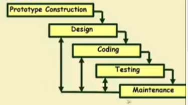
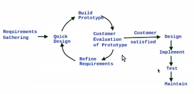
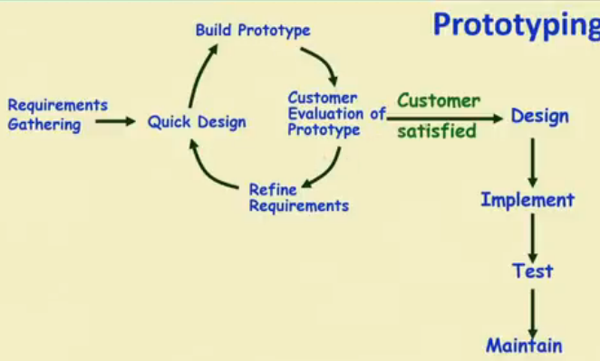
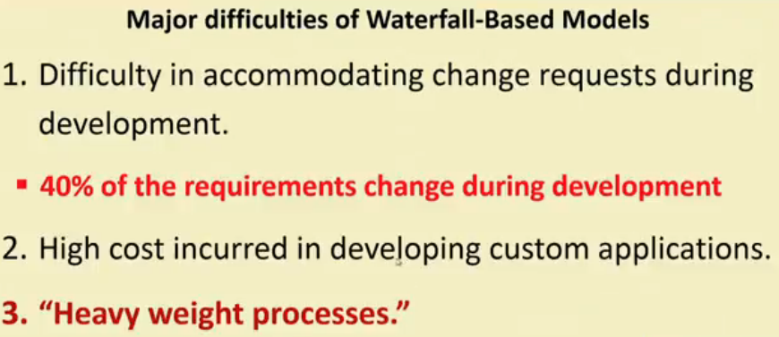
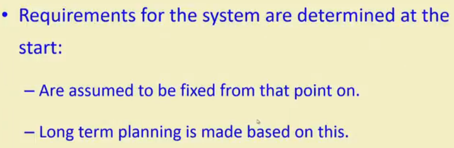

Prototyping Model
 
It's very similar to waterfall model but it starts with prototype construction.
Before starting actual development a working prototype(toy implementation of the system) of the system should first be built.
The prototype developed will have
- Limited functional capability
- Low reliability
- Inefficient performance.
Que: Why do we need to develop the prototype?
Ans:
- We develop it so that we can show it to the customer so that he can visualize the end product.
- It's useful for the projets where requirements are partially known so that customer itself can suggest changes after seeing prototype.
- Improves communication with customer
- Improved user involvement
- Reduced need for documentation.
- Reduce maintenance costs.
- Usefull for developers to examine technical issues associated with product development.
Activities in Prototyping model
→ Start with approximate requirements.
→ Carry out a quick design
→ Prototype is built using several short-cuts:
Shortcuts might imvolve using:
- Insufficient, inaccurate, or dummy functions.
- A table lookup rather than performing the actual computations.

→ When customer satisfies them actuall development start as like in waterfall model.
⇒ Requirement analysis and specification phase becomes redundant as final working prototype (incorporating all user feedbacks) serves as an animated requirement specification(SRS).
⇒ Now once the final prototype is done then the actuall software/product is again written from scratch taking help from experience gained while creating the prototype.
Advantages of prototyping model
- The resulting software is usually more usable
- User needs are better accomodated
- The design is of higher quality
- The resulting software is easier to maintain.
- Overall, the development incur less cost.
Disadvantages
- For some projects, it is expensive
- Susceptible to over- engineering:
- Designers start to incorporate sophestications that they could not incorporate in the prototype.
Que : Where to use this mode?
Ans : - When user feedback is very much important for development
- When initially partial requirement is given.
~~~~~~~~~~~~~~~~~~~~~~~~~~~~~~~~~

